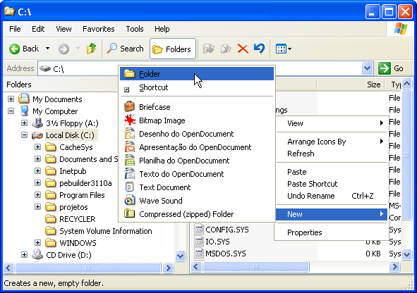
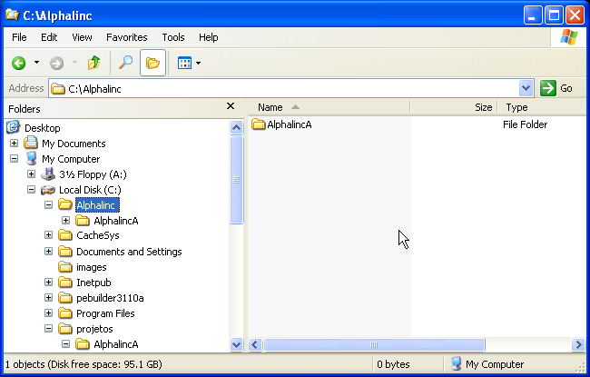
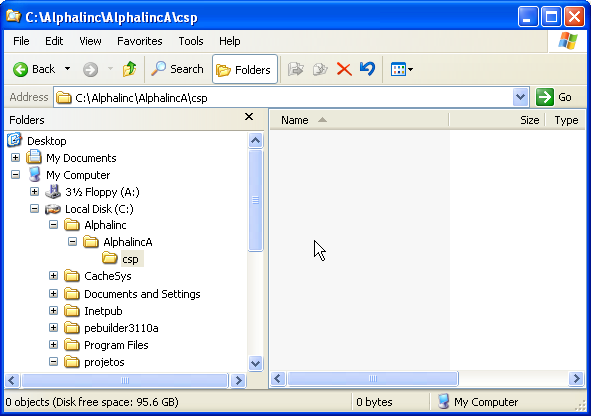
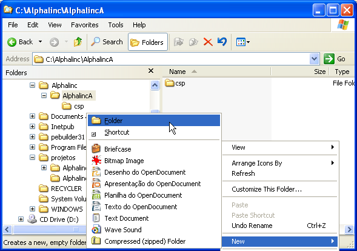
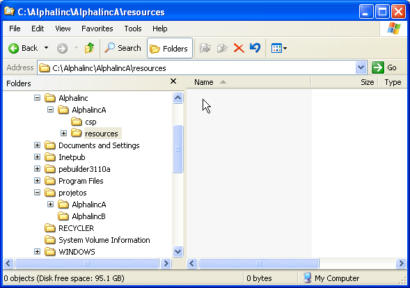
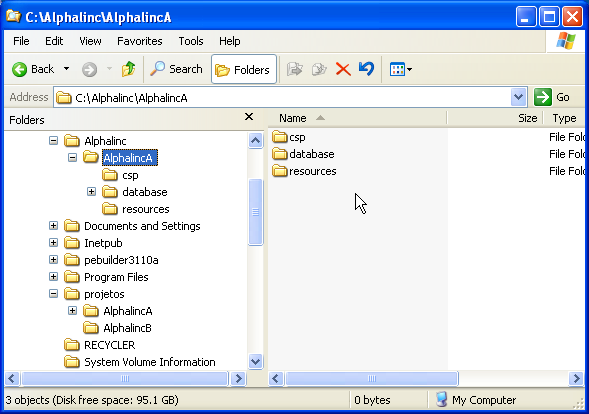

[Documentation Home]
[Installation Home]
Alphalinc Software Development Environment (ASDE) - Deployment directory configuration
- Open Windows Explorer and choose a hard drive with enough
free space to hold a full Alphalinc installation. Disc free space
should be around 280MB for the local repository plus the initial
CACHE.DAT, 3GB. Create a directory on the root named Alphalinc. If you already have created it, skip this step.
|

Figure 1 - Choosing a drive with enough free space for the deployments directory
|
- In Windows Explorer, browse to the Alphalinc directory. Then, create a new directory with the same
project name (the same Caché namespace name). Avoid using
white spaces or punctuation marks. In this example,
the name chosen is AlphalincA. This directory will hold all deployed files for the
AlphalincA namespace and project.
|

Figure 2 - create a new directory for AlphalincA deployments
|
- In Windows Explorer, browse to the Alphalinc\AlphalincA directory
and create a new directory with the name Csp. This directory will hold all CSP and related
files when deployed.
|

Figure 3 - Csp deployment directory for the AlphalincA project
|
- Browse to the Alphalinc\AlphalincA directory and create a new directory
named Resources. This directory will hold all resources and related files when deployed.
Resources are files that the regular web server delivers to the client browsers.
|

Figure 4a - creating a new folder
|
|

Figure 4b - Resources deployment directory for the AlphalincA project
|
- Now, still in Windows Explorer, open the Alphalinc\AlphalincA
directory and create
a new directory with the name Database. This directory will hold the CACHE.DAT file.
The final required directory structure is shown in figure 5.
|

Figure 5 - Database folder to hold CACHE.DAT
|
Those are all directories you need before following the next system setup steps.
Please go back to the installation document, and continue at the
configure Web server (IIS) step.
This document is the file projectDirectory/Implementation/docs/installation/deployment-configuration.html
Please feel free to make corrections and commit it to the repository.